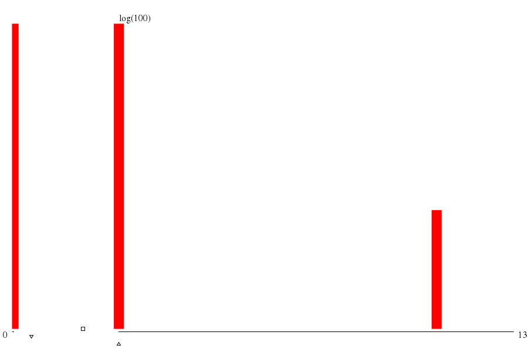

|  | ||
| maxs | mins | |
|
(213.su) 1318 |
(207.su) 3 |
|
|
(110.su) 1116 |
(212.su) 3 |
|
|
(109.su) 1116 |
(211.su) 3 |
|
|
(111.su) 1116 |
(209.su) 3 |
|
|
(108.su) 1116 |
(208.su) 3 |
| disk (MB) | mode ▵ | μ ▫ | (μ+σ)/μ | 1st alloc. max value | 1st alloc. max through ▿ | 1st alloc. min waste |
| -- 293.601 xE6 |
-- 195.035 xE6 |
-- 2.300 |
throu: 1.000 waste: 43.86%
alloc: 1.382 xE9 |
throu: 6.556 waste: 44.75%
alloc: 52.429 xE6 |
throu: 1.531 waste: 34.53%
alloc: 629.146 xE6 |